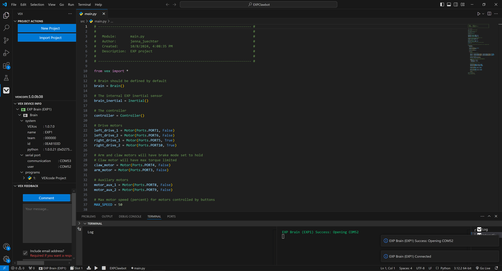

Visual Studio Code là gì?
Visual Studio Code là một trình soạn thảo mã nguồn miễn phí, hỗ trợ nhiều hệ điều hành như Windows, macOS và Linux. VS Code cung cấp nhiều tính năng hỗ trợ lập trình như gợi ý mã, kiểm tra lỗi, quản lý mã nguồn và gỡ lỗi chương trình.
VS Code có thể được sử dụng để phát triển Website, ứng dụng Web, chương trình Python, Java, C++, JavaScript và nhiều ngôn ngữ lập trình khác.
Các đặc điểm nổi bật
- Hỗ trợ nhiều ngôn ngữ lập trình.
- Có tính năng gợi ý và hoàn thành mã lệnh.
- Tích hợp Terminal ngay trong phần mềm.
- Hỗ trợ quản lý mã nguồn với Git.
- Có công cụ Debug giúp tìm và sửa lỗi chương trình.
Hình ảnh minh họa
Dưới đây là một hình ảnh minh họa cho giao diện làm việc của Visual Studio Code.

Thông tin chi tiết
| Thông tin | Đặc điểm | Mô tả |
|---|---|---|
| Nhà phát triển | Microsoft | Visual Studio Code được phát triển bởi Microsoft. |
| Loại phần mềm | Trình soạn thảo mã nguồn | Dùng để viết và chỉnh sửa mã nguồn. |
| Hệ điều hành | Windows, macOS, Linux | Hỗ trợ nhiều hệ điều hành phổ biến. |
| Ngôn ngữ hỗ trợ | JavaScript, Python, C++, Java... | Hỗ trợ nhiều ngôn ngữ lập trình. |
Ưu điểm
- Miễn phí và dễ dàng cài đặt.
- Giao diện tương đối đơn giản và dễ sử dụng.
- Hỗ trợ nhiều ngôn ngữ lập trình.
- Có nhiều Extension giúp mở rộng chức năng.
- Hỗ trợ Git và các công cụ phát triển phần mềm.
Hạn chế
- Cần cài đặt thêm Extension để có một số chức năng nâng cao.
- Có thể sử dụng nhiều tài nguyên máy tính khi mở nhiều Extension.
- Người mới sử dụng có thể mất thời gian để làm quen với các tính năng.